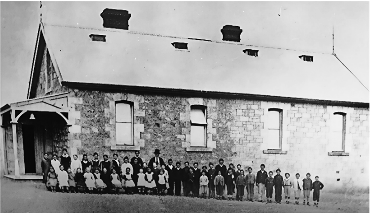
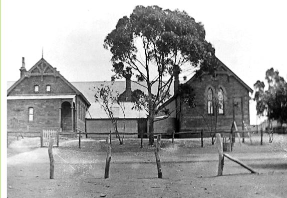
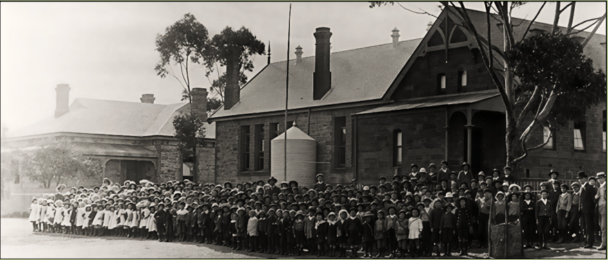
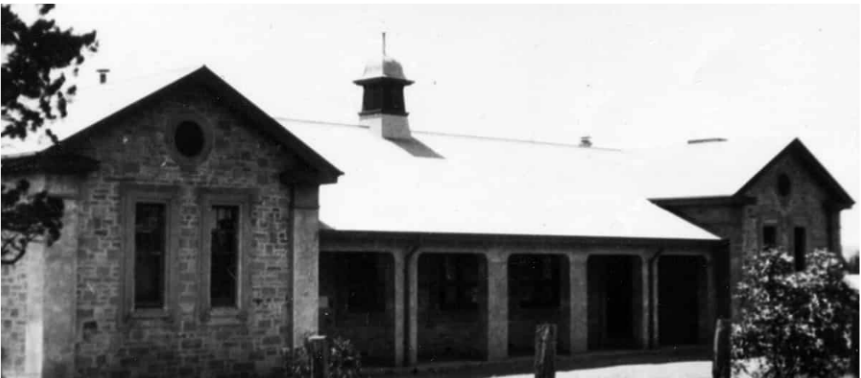

High School
From a small church classroom in 1881 to a purpose-built High School in 1927, this history walk traces education in Peterborough. Read how overcrowded classrooms, unhealthy conditions and years of waiting shaped the school, and how the community fought for the land, the building and the opportunities we take for granted. Meet the head teachers, the old scholars and teachers remembered on the memorial tablet and the students who competed in sport. Original photographs and newspaper clippings bring it all vividly to life.
As the town of Petersburg grew the need for a school was apparent.
The Union Church was leased by the education board, and an official school was opened in 1881.
The school was closed in April as the school master had disappeared. He had been seen in the neighbourhood, but it was reported that he was wandering around in a deranged state of mind. The council had been asked to appoint another as soon as possible. The school master was replaced by headmistress Miss Ellen J Arnold. The average attendance was less than fifty, with eighty-six school age children living within 3 ½ miles of the town.

Union Church
Photo - State Library of SA – Peterborough Collection Image B 61759
The church was proven to be too small for the number of children who were attending so the town residents lobbied to have a school built.
A public meeting was held on 29th October 1881 to discuss the wants of the town.
- An animated discussion ensued as to whether the site for the school was central enough. It was argued that the site was situated on high ground and in a healthy position and they had to look to the health of their children above all. It was estimated that there were now around eighty children who could attend school. The average attendance was between forty-five and fifty, and the old building could not possibly accommodate any more than already attended.
The Government was spending nearly £3,000 on buildings including a new school, post office and police station and cells. £1,200 was for the new school which could accommodate eighty students, £850 for the police station and cells and £750 for the post office and telegraph station. The Board of Advice for the district has settled on allotments 241, 242, 243, and 244 in Petersburg North for the school. This land was purchased from Mr Rohde for £50.
Tenders for the Government School at Petersburg were called for by Monday 9th May and Messrs G & W Sara and Duncan’s tender of £1098-12 was accepted on 23rd May. Sara & Duncan of Kooringa also built the Railway Station in 1880.
The new Petersburg State School and a four roomed residence was completed in December 1882 and following a final inspection in March, Mr Inglis the head teacher and his students were able to move into the school building. The school had a capacity for 80 children.

Petersburg State School - 1883
Photo – Peterborough Library History Room
The enrolments of the state school had been around one hundred for the past four years and in 1887 they had increased to 150 pupils. Many cases of ophthalmia were reported and this had kept the attendance down to about 50. Mr Inglis, Mr Hardy and Miss Inglis (sewing and fancy work) had their hands full when all attended.
By 1891 the town population had increased and there were complaints made about the inadequate accommodation at the State school, as the attendance greatly exceeded the number of scholars the school could hold. The school year opened at the end of January with Mr D O’Leary, late of Georgetown as head teacher.
The Petersburg Council inspected the conditions at the state school. The school was originally built for 80 students and there were now nearly double that attending.
With the additions to the Petersburg State School still not forthcoming the increasing population of the town made the accommodation even more cramped. Many lessons were held outside, and sanitation was very low.
The overcrowded state school had not had its promised additions, and in November 1891, the Petersburg Council decided to again communicate with the Minister of Education to try to resolve the matter.
The government agreed to arrange for a room to be used by the state school to accommodate the children due to the overcrowding at the school. The council decided that the school could have use of the town hall for school purposes in the daytime.
Finally, by January 1892 the enlargement of the school was in progress, and the education department had rented a three-roomed house adjoining the school, for use until the additions were completed, rather than using the town hall. The additions of two classrooms which had progressed slowly would increase the capacity of students from 80 to 200.
The enlargements at the state school had finally been finished and a building with two new classrooms had been added. The original room and teacher’s residence had not been repaired or improved since its erection and was still in a terrible state.

Petersburg State School 1892
Peterborough Library History Room
Although the school had been enlarged the toilets had not.
The sanitary conditions of the outbuildings at the school were unacceptable. The attendance at the school had now reached 180 and they had been waiting for nearly two years for the promised enlargement.
Even with the additional building several years ago the conditions at the state school had not improved with overcrowding a major issue. The school buildings could accommodate 200 students and there were almost 300 enrolled. There were only three teaching staff at the school as the fourth teacher had left and was not replaced. Many parents were refusing to send their children as they feared their children’s health was in danger.
Dr Stevenson submitted a report on the government school. According to the report “the school was overcrowded and the old part of the building badly ventilated, the air in the latter, on being tested showing 12 parts per 1000 of carbolic acid gas. The teachers and children frequently complained of headache and lassitude, which the doctor altogether attributed to the crowded and unhealthy condition of the building.”
After many complaints at the overcrowding of the state school, tenders had finally been called for the erection of two additional classrooms in January 1897. The enrolments were about 430 students, and the accommodation was for about 250.
The long-awaited additions to the Petersburg State School had been completed and were opened on Monday 7th September 1897.
In 1898 a roomy play shed had been erected at the school by Messrs Tuck Bros. This and the other additions made the previous year had greatly improved the accommodation at the school.
It was announced in December 1906 that continuation classes were to be established at Petersburg, Gawler, Moonta, Kapunda, Mount Gambier, Kadina and Port Pirie. Mr J Bills from the state school received a wire directing him to report to headquarters to test his qualifications to take charge in the projected continuation school. Forty pupils had signified their intention of attending.
An open day was held at the Petersburg State School on Friday 4th October 1907 with a large number of parents and friends attending. A splendid exhibition of fancy and other work was on view and unstinted praise was given for the children and teachers alike. There were 484 students enrolled and 341 of these undertook exams. 304 of these students were promoted, 33 of whom form the 6th Class, and it was hoped will qualify for the continuation class at the end of the year. The establishment of the continuation class, the formation of the school band and cadet corps were all great additions to the school. New classrooms were being built to accommodate the upper classes and would relieve the pressure of much needed accommodation.
After an eight year aggregation the additions to the state school of two classrooms and a new teacher’s residence had been completed in 1908. The school had 480 children on the roll and even with the new accommodation the school was almost taxed to its full capacity. The additions were declared open by the Treasurer (Hon AH Peake) accompanied by the Commissioner of Crown Lands and Members for the District. The two new rooms were for the continuation class which would be known as a District High School.
The old head teachers house had been demolished after the new one was built.

Original Petersburg State School building built in 1883 with the additional two classrooms for the High school class and new teachers house built in 1908
Photo – Lionel Noble Collection
Students from the high school travelled to Jamestown to play a game of cricket in November 1910. The Jamestown Cricket Club kindly allowed the boys to use their pitch and matting. After losing two quick wickets, the Petersburg team made 191 with A. Ryan being bowled for 97 to end the innings. The local boys took the visitors home for dinner before starting their innings. Jamestown were all out for 24 with A. Davey 7 for 15 and Ryan 2 for 4. Jamestown were sent in to bat again this time only managing to score 18 with Sharley 5 for 6 and Chinner 5 for 6.
The Petersburg High School held their fifth annual Speech day and prize distribution at the town hall on Wednesday 20th December 1911. Mr GH Oswald (assistant in charge) read the annual report with 54 students attending the school. Roy Davey was awarded Dux of the School and Marjorie Lewis was awarded Dux of the Primary School.
A farewell was held for Mr GH Oswald, assistant in charge of the High School in September 1915 as he had enlisted and was ordered into camp.
News had been received that George Oswald, of the local High School who was serving at the front, had been promoted to the rank of captain, and was awarded the Military Cross. He was serving with the 43rd Australian Infantry Battalion, 11th Brigade.
George Harry Oswald was severely wounded in the right thigh by a machine gun bullet before being hit by a shell. He died from wounds at the 61st Casualty Clearing Station near Daours, Somme, France, on 1st September 1918, age 30 years.
The playground at the Public School had been unusable since the building of the drain in 1915 and the children had not been able to use it. The Minister for Education (Hon. Mr Harvey) visited the school on Wednesday 23rd October 1918 and he stated that he would find funds to rectify the problem. The school committee also asked about having shorthand and Typewriting taught at the High School, as scholars from the school had no chance to enter the examination for the clerical division of the railways unless they were conversant with those subjects.
A Commercial Training Centre had been set up at several country schools and in 1919 Peterborough High School could now offer book-keeping, shorthand, typing and business correspondence to their students. The teacher would also visit Jamestown two days a week to give lessons.
The pupils from the high school travelled to Jamestown in October 1921 to compete in the annual triangular contest between Peterborough, Jamestown and Gladstone High Schools. The two visiting teams were entertained at lunch and afternoon tea by the students and staff of the Jamestown High School and competed in tennis and cricket and a 100 yard footrace. Although the weather was dull and stormy, a most enjoyable time was spent by all. Peterborough was only successful in the cricket match against Jamestown, losing to Gladstone in cricket and both tennis matches.
A memorial tablet of the men who enlisted in the Great War from the Peterborough High School took place on Wednesday 20th December 1922 at 11:30am. The Mayor Mr George Phillips unveiled the memorial which had the names of 50 old scholars and teachers who enlisted with DJ Badger, R. E Dodman, AF Hass, RA Wilson, HP Crickley WT Hass, BJ Irwin, GH Oswald and W Clarke paying the supreme sacrifice.
In August 1923 a committee had been formed for the proposal of a high school in the town. The Mayor (Mr Phillips), Councillors Goudie, Jamieson and Dodd were to approach Mr Koch re securing land next to Victoria Park. This was unsuccessful.
Correspondence was received from the High School Committee asking the council to grant three-quarters of an acre of land in Jubilee Park for the erection of a new high school as per the terms of the lease they were unable to use any of the land at Victoria Park. It was resolved to write to the Minister of Education asking if it was the intent of the department to erect a new high school at Peterborough.
By the beginning of 1924 the committee of the new high school were pleased to announce that the land for the school had been secured on the corner of Railway and Park Streets, facing Jubilee Park. The site was 3 roods – 9 perches (just under an acre) and cost £225.
“Provisions had been made on the Loan Estimates for the provision of a new High School at Peterborough,” said the Hon LL Hill (Minister of Education), in the reply to Mr S McHugh, in the Assembly on Tuesday 21st October. It was also announced that the Public School would be remodelled, and hoped that the work would begin during the present financial year. Finally the Minister of Education had approved the immediate purchase of a suitable permanent residence for the High School head-master.
The Hon L L Hill (Minister for Education), the Director of Education, the Superintendent of Primary Education and the Federal and State Members of Parliament visited Peterborough and were tendered a civic reception by the corporation on Friday 27th March 1924. A public address in the Town Hall in the evening was attended by a large number of the public. On Saturday morning the visitors inspected the site of the new High School and the remodelling of the Primary School. The site chosen for the High School near Jubilee Park had been the second choice and the first choice which the vendor originally would not sell, had now become available. The vendor was now willing to sell 2 acres adjacent to Victoria Park for a High School. The Government purchased the more suitable site for the High School which comprised 2 acres and cost £400. The site was next to Victoria Park on the south side of the town, and the site near Jubilee Park was sold.
By April 1926 the plans and estimates were almost complete for the high school, and tenders would be soon called. The cost of the school was £8,500 and would be completed in 12 months.
A woman’s basketball association had been formed in June 1926 and included five teams: Trojans, Spartans, Arcadians, Imperials and Gymnasiums. Matches would be played on Saturdays and the High School Courts at the Public School.
The remodelling of the State School had been given the go ahead and arrangements had been made by the Education Department to temporarily transfer the High School students to the Methodist Sunday School Hall where they would rent the hall and two classrooms.
The Foundation Stone of the new High School was laid by the Premier (Hon Lionel L Hill) on Friday 17th September 1926.
A new House system was introduced in July 1927. Two houses: Goode and Oswald named after Dr Goode and George Oswald, provided a good deal of interest, with points given for sport, School work and behaviour. Marks were deducted for misdemeanours including late-comers.
The High School council negotiated with Mr Koch for the purchase of extra land for tennis courts.
The Peterborough Highschool moved into their new quarters on Tuesday 30th August. Many thanks to the hard work of the Head Master, Messrs HC Ind, JC von Bertouch, WB Edson, W McLaren, assisted by Messrs W Cherry, N Keats, AD Garwood, JC Dodman, L Love and several of the high school boys who took the matter in hand and during the holidays succeeded in levelling the rubbish and clearing the grounds of rubble from the building operations and grading the grounds.

Original Highschool building
Photo – Lionel Noble Collection
Enrolments at the high school had reached 123 by the start of 1938 and more room was needed.
New classrooms were opened at the Peterborough Highschool on Friday 4th November 1938 by the Minister for Education Mr Jefferies and Director of Education Mr Adey. The High School committees had raised over £600 in the past ten years to help pay for the new rooms. The Highschool Old Scholars Association was formed.
In 1939 to encourage the students at the High School team spirit was fostered with the students being divided into four houses with points given for school work and sport. The final points were Adey 238 ½, Oswald 215 ½, Koch 213 ½, and Goode 144 ½.
Adey and Koch had been added to the existing teams of Oswald and Goode. Adey was named after the Minister for Education Mr WJ Adey and Koch was named after Mr JH Koch in recognition of his support to the high school.
The Garwood family established the AD Garwood Memorial award in memory of Mr Alfred Garwood a railway worker who died on 10th December 1943. The award was given as an annual prize for boys good citizenship. The Parent’s Association awarded a similar prize for girls.
Peterborough High School competed in the recent Northern Highschool’s Athletics contest at Jamestown on Wednesday 28 August 1946. More than 300 competitors from Jamestown, Peterborough, Booleroo Centre and Gladstone took part in the sports with Peterborough winning with 163 points. Peterborough had won the shield 10 out of 16 times and took possession of the shield. A new shield had been offered by donor Mr Murchland as there were now four teams in the competition.